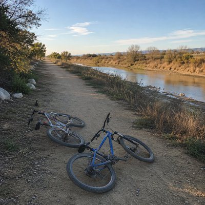

Geocaching turns an ordinary trail into a string of small discoveries. Using GPS coordinates to search for hidden containers, you can spend an entire day exploring places you might otherwise pass without a second glance. And once you find one, it's surprisingly easy to start looking for the next.
“How Many More?” captures the momentum of a day spent searching by bike, with one person always ready to move on and the other asking the question that keeps the journey going. Thirty-two finds later, the day is over, the results are recorded, and the numbers have become part of a much larger story. Yet there's no single discovery that explains why it all mattered, and no obvious finish line.
Maybe that's the nature of the pursuit. The places keep coming, the numbers keep growing, and somewhere along the way, the search itself becomes the point. Long after the bikes are home, one question remains: how many more?
We left the car where the pavement gave way Paper in my pocket, numbers for the day A little screen, a line, a place to begin You checked the brush, I was checking again One more hidden, then back on the trail Dust on the tires, the afternoon pale You looked at me like this wasn't the end I looked down the path and started again "How many more?" you asked with a smile As if we had only been riding a while "Where next?" you said, and I already knew A bend in the trail, then another one through We searched the bushes, low and high Passed by people who just passed us by To them it was only a trail through the trees To us, every few hundred yards held a key How many more? Just one more, I suppose How many more? I never really knew There was always another number Another turn, another place You kept asking where we were going I kept looking for the next one to chase Thirty-two by the time we were done More than I'd thought when the day had begun No one was waiting, no reason to stay Just two tired bikes at the end of the day Back home, I opened the page Marked what we'd found, marked what we'd missed One after another, the day disappeared Into little lines only we would read And somewhere between the first and the last Something had changed without making a sound The world was still there, exactly as before We'd just learned where to look around "How many more?" You asked it again I don't remember what I said Maybe I said, "Just one more" Maybe I always did The number was there when the evening was through A thousand finds, though I never knew Which one was the one that carried me across No photograph No finish line Just your question in the back of my mind- How many more? How many more?